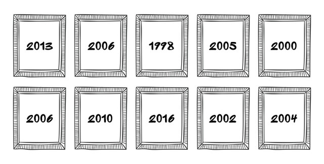
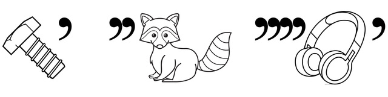
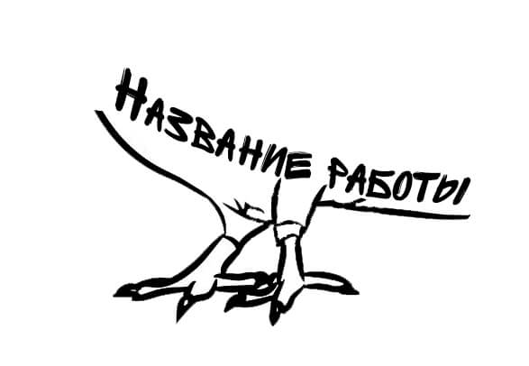
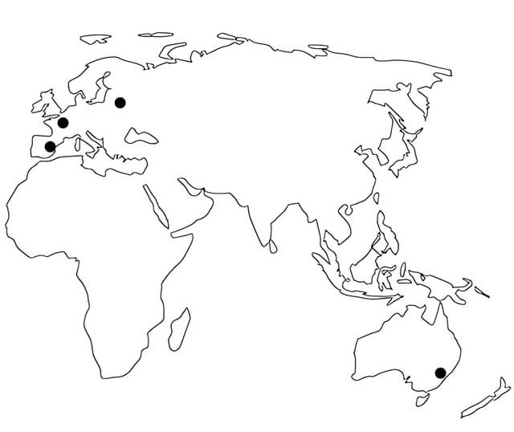

КВЕСТ ПО ВЫСТАВКЕ ИСКУССТВЕННЫЙ ИНТЕЛЛЕКТ: ХУДОЖНИК ИЛИ МАШИНА?
Несколько рекомендаций по прохождению квеста!
- Не бросайтесь проходить квест сразу — для начала хотя бы минимально ознакомьтесь с экспозицией.
- Отвечать на задания можно в любом удобном для вас порядке.
- Если совсем не удаётся решить какое-то задание, то смело переходите к следующему. Пока будете решать следующее задание, можете натолкнуться на ответ к предыдущему 😉
- Чтобы пройти квест, обращайте внимание на работы всех авторов.
- Если вы правильно ответите на все вопросы квеста, то получите приятный бонус от FARBA.
Вопрос
1.
Вам сразу повезло, ведь вам предстоит найти ответ на вопрос от генерального партнёра выставочного проекта «Мировой поп-арт: от Уорхола до Бэнкси» — ОАО «Минск Кристалл» 🔥
В этом задании мы сразу зашифровали для вас часть экспозиции на изображении ниже.
Если догадались, что за года здесь указаны, то напишите, пожалуйста, КАКОЕ НАЗВАНИЕ у того, кто скрывается под 2000 годом?
К сожалению, это неправильный ответ. Попробуйте еще раз! Помните, что можно воспользоваться подсказками.
В этом задании можно пробовать искать цельную часть экспозиции, состоящую из 10 работ, или же пробовать отталкиваться от дат. Все даты отсылают нас к достаточно недавним событиям, к чему-то такому, что появлялось не так давно, но без чего уже сложно представить нашу жизнь; то, в чем многие из нас проводят немало времени.
Вопрос
2.
Как у вас обстоят дела с ребусами? Подсказываем, если не знаете: сколько запятых или апострофов — столько букв надо убрать в начале или в конце слова, которое изображено. В ребусе мы загадали вам название одной работы на выставке.
Разгадали ребус? Значит у вас получилось название одного из героев, которого можно найти в экспозиции. Если всё получилось, то напишите, пожалуйста, КАК ЗОВУТ ПРЕКРАСНУЮ ДАМУ на работе, которая расположилась слева?
К сожалению, это неправильный ответ. Попробуйте еще раз! Помните, что можно воспользоваться подсказками.
Давайте для начала разгадаем ребус. Первое изображение — БОЛТ. Убираем последнюю букву, остаётся БОЛ. Второое изображение — ЕНОТ, «минус» 2 первые буквы — остаётся ОТ. Третье изображение — НАУШНИКИ, убираем 4 буквы в начале и 1 в конце, остаётся — НИК. Складываем все кусочки вместе — БОЛ-ОТ-НИК. Теперь осталось найти этого героя и написать, что за прекрасная дама расположилась слева.
Вопрос
3.
Внимание, возможно одно из самых сложных заданий квеста! (по мнению автора)
Ну как вам наше изображение с зашифрованным названием картины? Целый шедевр получился! Попробуйте догадаться, название какой картины мы здесь зашифровали. А если догадались, то НАПИШИТЕ, пожалуйста, ГОД, в котором была создана эта работа.
К сожалению, это неправильный ответ. Попробуйте еще раз! Помните, что можно воспользоваться подсказками.
Что мы видим на изображении? Лапки какой-то птицы. Значит в экспозиции надо искать работу в названии которой будут фигурировать «лапки какой-то птицы». Когда найдете такую, то не забудьте написать именно год, в котором была создана эта работа.
Вопрос
4.
Как вы думаете, что мы любим больше всего? Правильно, зашифровывать для вас работы из экспозиции!
На этом изображении мы зашифровали целых 4 связанных между собой работы из нашей экспозиции. Задание кажется вам сильно простым? Тогда НАПИШИТЕ, пожалуйста, ФАМИЛИЮ того, кто создал самый высокий из объектов, которые можно найти на зашифрованных работах?
К сожалению, это неправильный ответ. Попробуйте еще раз! Помните, что можно воспользоваться подсказками.
Ну что, перед нами карта, на которой отмечены 3 европейских города и 1 австралийский. Хм, где же мы видели 3 европейских объекта и 1, который находится в Австралии? Нашли? Теперь разбирайтесь, какая фамилия у того, создал самый высокий из этих объектов.
Вопрос
5.
Вашему вниманию определения одного термина, состоящего из 8 букв:
• торжественный акт верховной власти, оповещающий население об издании законов чрезвычайной важности или об особо важных событиях в государстве;
• выражение определённой группой людей, например, политической партией или общественной организацией, своего мнения, содержащее программу и принципы деятельности, иногда призыв;
• в искусстве: письменное изложение литературных или художественных принципов какого-либо направления или группы в литературе и искусстве.
Еще не запутались? Тогда найдите в экспозиции работу, названием которой является этот термин, и НАПИШИТЕ, пожалуйста, ФАМИЛИЮ АВТОРА этой работы.
К сожалению, это неправильный ответ. Попробуйте еще раз! Помните, что можно воспользоваться подсказками.
Все представленные определения относятся к понятию «манифест». Теперь осталось найти автора одноименной работы и написать в поле с ответом его фамилию.
Вопрос
6.
Ну что, еще не проголодались, пока разгадываете квест? Тогда двигаемся дальше!
Среди работ этого раздела нашей экспозиции можно увидеть и, скажем так, «салат», и всем известный «десерт». Уже догадались, в каком разделе притаились такие работы? Тогда НАПИШИТЕ, пожалуйста, КАКОЕ ЧИСЛО, написанное римскими цифрами, можно найти среди подписей к работам этого раздела?
Число модете писать как арабскими, так и римскими цифрами — ответ засчитается любыми цифрами. Может хоть прописью написать!
К сожалению, это неправильный ответ. Попробуйте еще раз! Помните, что можно воспользоваться подсказками.
А что если подскажу вам, что эти блюда получили свои названия в честь известных исторических персонажей? Десерт — слоеный торт, салат — с курочкой, помидорками...
Вопрос
7.
Если разгадывали квест на нашем предыдущем проекте «Мировой поп-арт: от Уорхола до Бэнкси», то, вероятно, помните, что там было задание для автолюбителей. В этом квесте мы решили продолжить автомобильную тематику.
Название автомобильной марки, которую вы видите на изображении, является именем одной из героинь, которая присутствует на работе из экспозиции. Если догадались, что за марка и героиня, то НАПИШИТЕ, КАКОЕ ПРОЗВИЩЕ у джентельмена, который расположился на работе справа от нашей героини.
К сожалению, это неправильный ответ. Попробуйте еще раз! Помните, что можно воспользоваться подсказками.
Марка автомобиля на изображении — ЛАДА. Теперь осталось найти героиню с таким именем и написать прозвище джентльмена справа.